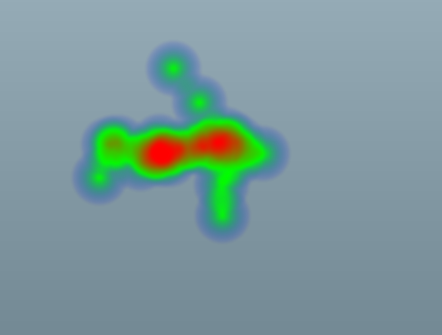

You can create a density heat map control in MXML using
the <ilog:DensityHeatMap> tag. If you
intend to refer to this control elsewhere in your MXML, for example,
in another tag or in an ActionScript®
block, you must specify an id value.
A heat map control displays the value property for a
set of points using a dataProvider object as shown in the following example.
<?xml version="1.0" encoding="utf-8"?>
<mx:Application xmlns:mx="http://www.adobe.com/2006/mxml"
xmlns:ilog="http://www.ilog.com/2007/ilog/flex"
layout="absolute">
<ilog:DensityHeatMap width="400" height="400">
<ilog:dataProvider>
<mx:XMLList>
<point x = "179.8" y = "148.5" />
<point x = "108.0" y = "144.1" />
<point x = "221.2" y = "184.2" />
<point x = "235.8" y = "141.5" />
<point x = "198.0" y = "145.4" />
<point x = "99.5" y = "177.6" />
<point x = "225.3" y = "134.1" />
<point x = "160.1" y = "158.7" />
<point x = "118.3" y = "142.3" />
<point x = "262.6" y = "152.9" />
<point x = "173.4" y = "68.2" />
<point x = "235.3" y = "159.1" />
<point x = "169.6" y = "158.8" />
<point x = "159.7" y = "140.9" />
<point x = "222.7" y = "215.1" />
<point x = "154.2" y = "150.5" />
<point x = "203.9" y = "148.0" />
<point x = "140.0" y = "163.6" />
<point x = "216.0" y = "141.2" />
<point x = "199.2" y = "102.3" />
</mx:XMLList>
</ilog:dataProvider>
<ilog:colorModel >
<ilog:ColorModel>
<ilog:ColorEntry color="0x0000ff" limit="0" alpha="0"/>
<ilog:ColorEntry color="0x00ff00" limit="50" />
<ilog:ColorEntry color="0xff0000" limit="120" />
</ilog:ColorModel>
</ilog:colorModel>
</ilog:DensityHeatMap>
</mx:Application>
The following figure shows the resulting density heat
map.
